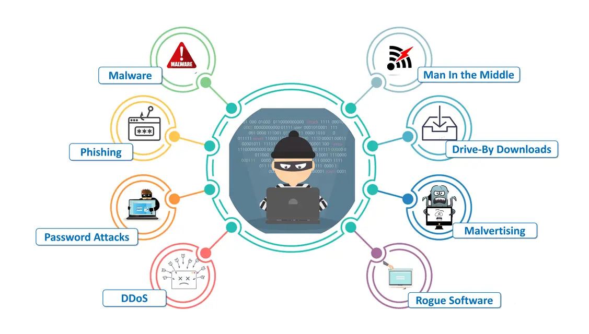
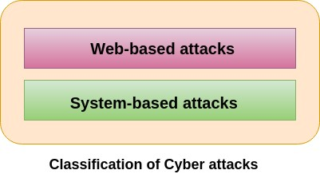

CYBER ATTACKS

Types of Cyber Attacks
A cyber-attack is an exploitation of computer systems and networks. It uses malicious code to alter computer code, logic or data and lead to cybercrimes, such as information and identity theft.
We are living in a digital era. Now a day, most of the people use computer and internet. Due to the dependency on digital things, the illegal computer activity is growing and changing like any type of crime.
Cyber-attacks can be classified into the following categories:
Web-based attacks
These are the attacks which occur on a website or web applications. Some of the important web-based attacks are as follows-
1. Injection attacks
It is the attack in which some data will be injected into a web application to manipulate the application and fetch the required information.
Example- SQL Injection, code Injection, log Injection, XML Injection etc.
2. DNS Spoofing
DNS Spoofing is a type of computer security hacking. Whereby a data is introduced into a DNS resolver's cache causing the name server to return an incorrect IP address, diverting traffic to the attacker?s computer or any other computer. The DNS spoofing attacks can go on for a long period of time without being detected and can cause serious security issues.
3. Session Hijacking
It is a security attack on a user session over a protected network. Web applications create cookies to store the state and user sessions. By stealing the cookies, an attacker can have access to all of the user data.
4.Phishing
Phishing is a type of attack which attempts to steal sensitive information like user login credentials and credit card number. It occurs when an attacker is masquerading as a trustworthy entity in electronic communication.
5. Brute force
It is a type of attack which uses a trial and error method. This attack generates a large number of guesses and validates them to obtain actual data like user password and personal identification number. This attack may be used by criminals to crack encrypted data, or by security, analysts to test an organization's network security.
6. Denial of Service
It is an attack which meant to make a server or network resource unavailable to the users. It accomplishes this by flooding the target with traffic or sending it information that triggers a crash. It uses the single system and single internet connection to attack a server. It can be classified into the following-
Volume-based attacks- Its goal is to saturate the bandwidth of the attacked site, and is measured in bit per second.
Protocol attacks- It consumes actual server resources, and is measured in a packet.
Application layer attacks- Its goal is to crash the web server and is measured in request per second.
7. Dictionary attacks
This type of attack stored the list of a commonly used password and validated them to get original password.
8. URL Interpretation
It is a type of attack where we can change the certain parts of a URL, and one can make a web server to deliver web pages for which he is not authorized to browse.
9. File Inclusion attacks
It is a type of attack that allows an attacker to access unauthorized or essential files which is available on the web server or to execute malicious files on the web server by making use of the include functionality.
10. Man in the middle attacks
It is a type of attack that allows an attacker to intercepts the connection between client and server and acts as a bridge between them. Due to this, an attacker will be able to read, insert and modify the data in the intercepted connection.
System-based attacks
These are the attacks which are intended to compromise a computer or a computer network. Some of the important system-based attacks are as follows-
1. Virus
It is a type of malicious software program that spread throughout the computer files without the knowledge of a user. It is a self-replicating malicious computer program that replicates by inserting copies of itself into other computer programs when executed. It can also execute instructions that cause harm to the system.
2. Worm
It is a type of malware whose primary function is to replicate itself to spread to uninfected computers. It works same as the computer virus. Worms often originate from email attachments that appear to be from trusted senders.
3. Trojan horse
It is a malicious program that occurs unexpected changes to computer setting and unusual activity, even when the computer should be idle. It misleads the user of its true intent. It appears to be a normal application but when opened/executed some malicious code will run in the background.
4. Backdoors
It is a method that bypasses the normal authentication process. A developer may create a backdoor so that an application or operating system can be accessed for troubleshooting or other purposes.
5. Bots
A bot (short for "robot") is an automated process that interacts with other network services. Some bots program run automatically, while others only execute commands when they receive specific input. Common examples of bots program are the crawler, chatroom bots, and malicious bots.